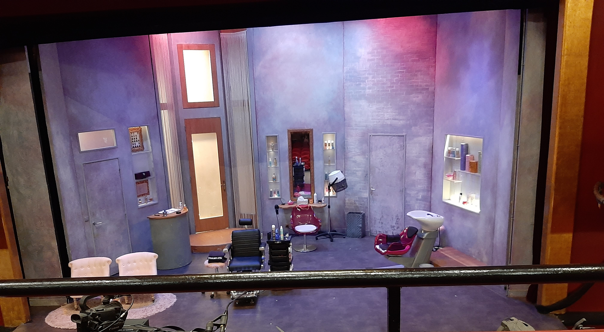
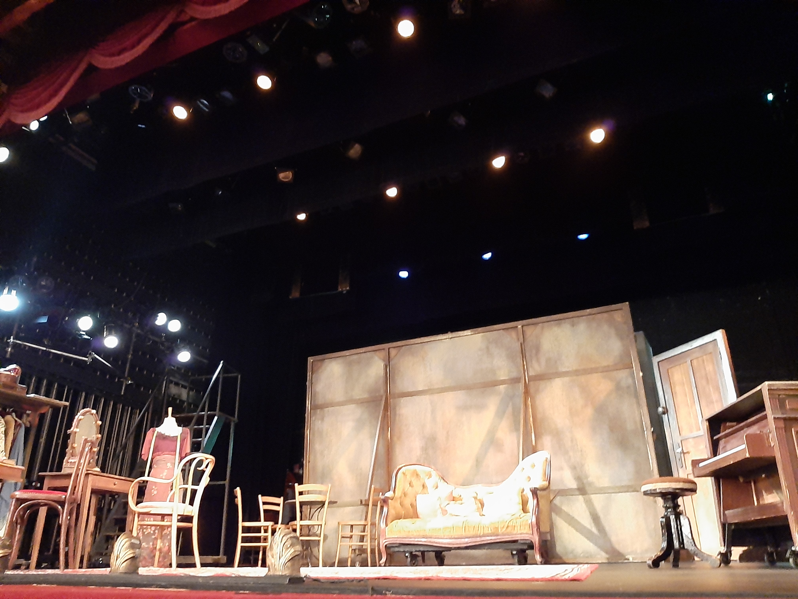

Hello, I am Yael!😀

I am a first-year ESSEC Global BBA student in the English Track. I am French. I like dancing, singing, acting and reading books. I am learning to code with Le Wagon. It is very fun!
ESSEC Global BBA PresentationDance💃
I did 3 years of initiation to classic dance. Since 10 years, I have been taking Modern Jazz lessons. Every two years, I do a show with my group. It is one of my favorite hobby.
Sing🎙️
I really enjoy singing at home and at karaokes. When I was younger, I dreamt to become a singer and dancer.
Act in plays🗣️
 I did 10 years of theater, and unfortunately, I stopped. I would like to join a new theater group. I often go to see plays with my family and my friends.
Reading books📖
I like to read books, even though I read less than before. I read many fantasy books, such as Harry Potter, Keeper of the Lost Cities, policy books with Hercule Poirot, and classical French books.